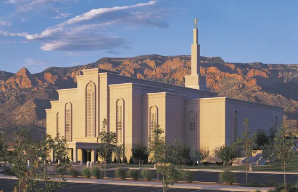
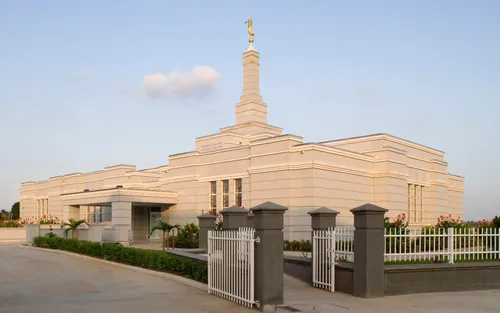

Temple Album
☰
Home
Old
New
Large
Small
Home
Abidjan Ivory Coast Temple

Albuquerque New Mexico Temple
Accra Ghana Temple
Adelaide Australia Temple
Alabang Philippines Temple
Anchorage Alaska Temple
Bacolod Philippines Temple

Aba Nigeria Temple
Austin Texas Temple
 Austin Texas Temple
Austin Texas Temple